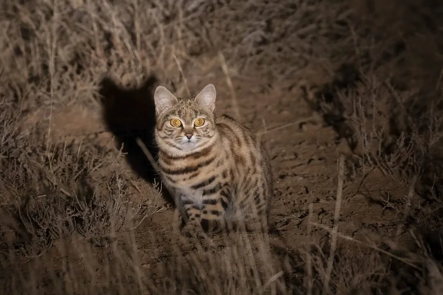

哺乳动物 · 动物界
黑足猫 Felis nigripes

非洲南部最小的猫科之一，脚掌黑色、体形小巧，夜间捕猎成功率极高，是非洲最致命的微型猎手之一。
- 分类
- 门脊索动物门纲哺乳纲目食肉目科猫科属猫属
- 栖息环境
- 非洲南部的干旱草原、灌丛与半荒漠
- 地理分布
- 纳米比亚、博茨瓦纳、南非及安哥拉部分地区的干旱地区
- 保护级别
- IUCN 易危（VU）
物种志
黑足猫体长 0.36–0.52 米，尾长 0.12–0.2 米，体重 1–2.5 kg，是非洲最小的猫科动物。它的被毛为浅黄至沙褐色，全身布满黑色斑点和条纹，四肢和脚掌为黑色，因此得名；头部较大、耳朵圆，眼睛大，体形矮壮。
黑足猫分布于非洲南部的纳米比亚、博茨瓦纳、南非和安哥拉部分地区的干旱草原、灌丛和半荒漠。它是夜行性独居猎手，听觉极灵敏，能捕捉鼠类、鸟类、爬行动物、昆虫甚至跳鼠；一夜可移动数公里，捕猎成功率在猫科中名列前茅。黑足猫不善于攀爬，多在地面活动，白天躲藏在废弃的跳鼠洞或岩缝中。雌性妊娠期约 63–68 天，每胎 1–3 仔。由于栖息地退化和误捕，黑足猫数量下降，被列为易危，是非洲最稀少的猫科之一。
形态与习性
- 食性鼠类、鸟类、爬行动物、昆虫与跳鼠
- 体长0.36–0.52 m，尾长 0.12–0.2 m
- 体重1–2.5 kg
- 寿命野外约 10 年
- 繁殖妊娠期约 63–68 天，每胎 1–3 仔
- 活动节律夜行独居
- 捕猎捕猎成功率在猫科中名列前茅
趣味知识
- 黑足猫是非洲最小的猫科之一，体重只有 1–2.5 kg。
- 它的脚掌是黑色的，因此得名，也便于在沙地上行走。
- 黑足猫夜间捕猎成功率极高，被称为非洲最致命的微型猎手。
- 它不善于攀爬，白天躲在废弃的跳鼠洞或岩缝中。